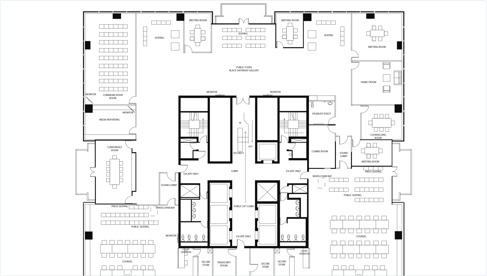
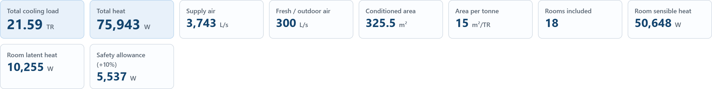

Case study: cooling loads from a floor plan
LoadLens reads a real architectural sheet and returns a room-wise cooling load schedule. On the public sample drawing it fills 22 room areas from the drawing itself and produces 21.59 TR of cooling load over 18 conditioned rooms — with the sheet's own units detected, and every room it could not measure left honestly blank instead of guessed.
This page is the engineering behind that number: what the tool decides, what it refuses to decide, and where its limits are. The app itself is at loadlens.net and the source is on GitHub.
The measured result
21.59 TR · 75,943 W total heat · 3,743 L/s supply air · 325.5 m² conditioned · 15 m²/TR · 18 rooms in the load, 22 areas taken from the drawing.
What it costs to run
Nothing, per user. The incumbent tools for this first-pass job are sold per seat — Carrier System Design Load at about $1,055 and Trane TRACE 700 at about $1,995 — which is the reason small consultancies do this step in Excel instead.
The problem
The slowest part of a first-pass HVAC estimate is not the physics, it is the retyping. The rooms are already named and dimensioned in the drawing. Someone copies those names, areas and heights into a spreadsheet, one row at a time, then does the same arithmetic row by row.
The packaged tools that automate it are priced for a firm with a dedicated HVAC department, licensed per seat. A small consultancy in Kerala or a two-person Gulf office cannot justify that for a first-pass check, so the spreadsheet stays. That gap — a real load schedule with no licence and no install — is what this project fills.
What it does


How the number is produced
- Read the sheet, not a picture of it. Room names, printed areas, dimensions and scale notes come out of the PDF's text layer with their positions. That gives the room list and, separately, the evidence of which unit system the sheet is drawn in.
- Decide the units from evidence, and say what the evidence was. Areas in m², millimetre dimensions and a 1:100 note point one way; ft², feet-and-inches dimensions and 1/4" = 1'-0" point the other. Two agreeing pieces are required before the sheet is called metric or imperial; contradictory evidence is reported as a contradiction, and a sheet with nothing to go on is called unknown rather than assumed.
- Measure only when the outline is unambiguous. A room area is taken from the drawing only when a closed wall outline exists, the part of it a room owns holds exactly one room name, the measured area falls in a plausible range, and it does not really overlap another room. Otherwise the room keeps a blank area and a plain-English reason. Where one traced outline holds several room names, the tool now splits it at door-width openings and gives each room its own part; a space with no name stays with no room; on the house sample this took the filled areas from 6 to 10 of 10.
- Do the load in SI, once. The calculation runs in SI as a single source of truth. Imperial results are a labelled conversion of the same numbers, not a second calculation, and the report says so in words — so the screen, the printed report and the CSV can never disagree.
- Keep the drawing where it belongs. Geometry is stored in PDF points and converted to screen pixels on every repaint, so zooming, panning and page rotation can never corrupt the measured areas.
What it refuses to do
The rule that shaped this project is that a wrong number is worse than a blank one. Some consequences of taking that seriously:
- On the sample sheet the tool fills 22 of 56 rooms and states the reason for the other 34: "28 because the room is open to the next space, so its edge is not on the drawing, 4 because one outline holds several room names, 2 because the traced shape did not look like a room." It does not quietly fill them with something plausible.
- A room whose area is unknown stays out of the load and is flagged, rather than carrying a guess.
- Every filled area can be undone in one action, and a filled outline is only kept when the traced shape agrees with the area the plan itself prints.
- The privacy claim is written narrowly on purpose. The honest sentence is that a drawing is never sent to a third party; on this site it is posted to this site's own server so it can be parsed faster, in memory, not stored. "Nothing is uploaded" would have been simpler and less true, so it is not used anywhere on this site.
Honest limits
- Open-plan sheets are the hard case. When one closed outline contains many room names — typical of an open office floor — most of those rooms still cannot be bounded from the drawing alone. Auto-fill is about 39 % on the sample office sheet, and above 60 % on an enclosed house plan; the rest is manual, by design.
- The drawing scale is still the user's to confirm. Areas depend on the scale printed on the sheet (1:100 by default). If a PDF was rescaled after export, areas are wrong by the square of that error. There is no two-point calibration tool yet — that is the next real improvement.
- The method is handbook-level (simplified ASHRAE / Carrier E-20 style), for study and checking. It is not a substitute for a full design package, and a qualified engineer must verify every number.
- Imperial sheets have not yet been tested on a real US drawing, only on constructed cases.
Under the hood
A static site with no build step: plain HTML, ES modules and CSS, with pdf.js vendored so the app has no runtime dependency on a CDN. The calculation, the tracer and the unit rules are pure modules with their own Node test suites; the drawing surface keeps geometry in PDF points. It is deployed on AWS (S3 behind CloudFront, with a small function for optional server-side parsing) inside the free tier, and guarded by roughly 220 browser checks and 19 Node suites that run before every deploy — including checks that the wording on the site never over-claims.
About the work, and what I am looking for
I am Ratul S, an MEP / HVAC drafter and modeller working with Kerala and Gulf projects. LoadLens is what happens when the day job's bottleneck meets the ability to write software: building-services engineering, with a working product built around it.
I am looking for a role where both halves are useful — building-services / HVAC design or BIM, building performance, or engineering at a company that builds software for buildings. The app is public so it can be tested in thirty seconds, and the source is open.
Contact and code: github.com/ratul-sraj · the live tool: loadlens.net.